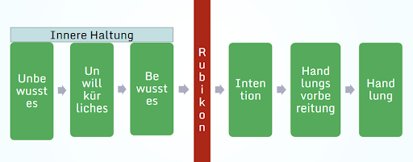

12 - Retrospektive, Teilen, Verstetigen
Impuls: Vom Reflektieren zum Handeln -- Warum Retrospektiven wirken
Zwölf Wochen liegen hinter Euch. Zwölf Wochen, in denen Ihr Fragen gestellt, Euren Wirkungskreis vermessen, Perspektiven gewechselt, Zukünfte entworfen, Annahmen hinterfragt, Experimente gewagt, Wirkung reflektiert und Stolperfallen gemeistert habt.
Bevor Ihr nun auseinandergeht, legen wir eine Station ein, die in vielen Lernprozessen leider unterschätzt oder eilig übersprungen wird: die Retrospektive.
Warum ist das Innehalten am Ende so entscheidend? Im durchgetakteten Alltag neigen wir dazu, von einer Aufgabe zur nächsten zu hetzen. Ohne einen bewussten Rückblick bleibt Erlebtes jedoch oft nur eine Ansammlung von Einzeleindrücken. Erst die Retrospektive verwandelt reine Erfahrung in echtes, nachhaltiges Lernen. Sie hilft Euch, den unsichtbaren Fortschritt der kleinen Schritte sichtbar zu machen, Erreichtes zu würdigen und die gewonnenen Erkenntnisse fest im Gedächtnis zu verankern.
Vom Verstehen zum Tun: Das Rubikon-Modell der Handlungsphasen
Vielleicht fragt Ihr Euch an dieser Stelle: „Ich habe in den letzten 12 Wochen so viel verstanden -- aber wie stelle ich sicher, dass ich nach diesem Lernpfad nicht wieder ganz automatisch in meine alten Muster zurückfalle?"
Die Antwort liegt im Zusammenspiel von innerer Haltung und äußerer Handlung, wie es das Rubikon-Modell aus der Motivationspsychologie (entwickelt von Heinz Heckhausen und Peter Gollwitzer) veranschaulicht. Es beschreibt den Weg vom Unbewussten zur tatsächlichen, dauerhaften Verhaltensänderung:

- Die Entwicklung Eurer Inneren Haltung (Links vom Rubikon):
-
Unbewusstes: Hier haben wir alle angefangen -- vor Woche 0. Es sind unsere tief verankerten, oft unbewussten Denkmuster, Routinen oder unhinterfragten Annahmen darüber, wie Dinge im Arbeitsalltag „eben laufen".
-
Unwillkürliches: In den Wochen 1 bis 3 habt Ihr begonnen, auf Eure spontanen Bauchgefühle, ersten Neugier-Impulse und emotionalen Reaktionen zu achten -- etwa wenn Eure Stresstoleranz gefordert war oder Ihr Euren Wirkungskreis vermessen habt.
-
Bewusstes: In den Wochen 4 bis 6 ging es darum, diese Impulse in ein klares Verstehen zu übersetzen. Ihr habt Perspektiven erkundet, Zukünfte entworfen, Annahmen sichtbar gemacht und gelernt, zwischen reiner Beobachtung, Deutung und Annahme bewusst zu unterscheiden.
-
Der Rubikon-Übertritt (Der rote Wendepunkt): In der Halbzeit (Woche 6/7) der entscheidende Wendepunkt: wie der historische Cäsar, der den Fluss Rubikon überschritt und wusste, dass es kein Zurück mehr gab, habt Ihr einen verbindlichen Entschluss gefasst. Ihr habt die rote Linie überschritten: Aus dem unverbindlichen „Ich könnte mal..." wurde ein klares "Ich will!" und habt aktiv etwas ausprobiert.
-
Entstehung der Äußeren Handlung (Rechts vom Rubikon):
-
Intention: In Woche 7 habt Ihr das nötige Zutrauen gefasst und Eure Selbstwirksamkeit aktiviert. Ihr habt den festen Entschluss gefasst, eine konkrete Lernfrage handelnd zu erkunden.
-
Handlungsvorbereitung: Ebenfalls in Woche 7 habt Ihr Eure Absicht konkret geplant: Ihr habt ein alltagstaugliches 7-Tage-Experiment mit Hypothese, Auslöser und Beobachtungskriterium skizziert.
-
Handlung: In den Wochen 8 bis 11 seid Ihr schließlich ins echte Tun gekommen. Ihr habt Experimente gewagt, Wirkung reflektiert, Resonanz eingeholt und gelernt, Stolperfallen neugierig zu meistern.
Die wichtigste Erkenntnis aus diesem Modell lautet: Eine äußere Handlung braucht eine innere Haltung -- und umgekehrt.
Eine innere Haltung wie Neugier oder Zukunftslust ohne äußere Handlung bleibt ein theoretischer Wunschtraum auf der einen Seite des Rubikons. Eine äußere Handlung ohne die passende innere Haltung wiederum verkommt schnell zu einer starren Pflichtübung oder zu leerer Routine. Eure Neugier öffnet den Raum für neue Fragen. Eure Zukunftslust zeigt Euch die Attraktivität des Möglichkeitsraums. Eure Selbstwirksamkeit gibt Euch das Zutrauen, den Schritt zu wagen. Doch erst wenn Ihr den Rubikon überschreitet und Eure Absichten in konkrete, wiederkehrende Alltagsroutinen übersetzt, wird aus der Haltung eine gelebte Praxis. Die folgende Retrospektive ist Euer Sprungbrett über diesen Rubikon.
Kata 12: Retrospektive & Praxis verstetigen
Das Ziel ist, dass Ihr Eure eigene Lernreise resümiert, ein klares Haltungs- und Handlungsziel formuliert und den gemeinsamen Abschluss im Circle feiert.
Teil A - Meine persönliche Lernbilanz (15 Minuten)
Schritt 1: Die Standort-Skalierung im Vergleich zu Woche 0 (5 Minuten)
Holt Eure Aufzeichnungen aus Woche 0 hervor. Bewertet Euren heutigen Stand erneut auf einer Skala von 0 bis 10 (10 = Dein persönliches Optimum) bezüglich:
-
Neugier: Wie offen gehe ich heute auf Neues zu?\ Und vergleiche den Stand aus Woche 0 mit heute.
-
Zukunftslust: Wie positiv schaue ich aktuell auf die Zukunft und meine Mitgestaltungsmöglichkeiten?\ Und vergleiche den Stand aus Woche 0 mit heute.
-
Selbstwirksamkeit: Wie sehr glaube ich daran, dass mein Handeln einen Unterschied macht? Und vergleiche den Stand aus Woche 0 mit heute.
Beantworte zudem für Dich schriftlich:
-
Wo zeigt sich der größte Sprung?
-
Welche konkreten Momente und Erfahrungen aus den letzten 12 Wochen führten zu Deiner heutigen Einschätzung?
-
Was war Dein Anteil daran?
Schritt 2: Der Lernpfad-Rückblick (10 Minuten)
Blättert noch einmal gedanklich oder in Euren Notizen durch die vergangenen Wochen:
-
Woche 2 (Wirkungskreis): Was habe ich über meinen echten Einflussbereich gelernt?
-
Woche 4 & 5 (Perspektiven & Zukünfte): Welches Zukunftsbild oder welche neuen Perspektiven wirken in mir nach?
-
Woche 7 & 8 (Experimente): Worauf bin ich stolz, dass ich es ausprobiert habe?
-
Woche 11 (Stolperfallen): Welche Erkenntnis hilft mir, wenn es künftig wieder einmal knirscht?
-
Insgesamt: Was habt ihr über all die Zeit darüber hinaus noch dazugelernt?
Teil B - Meine Brücke in den Alltag: Haltungs- und Handlungsziel (10 Minuten)
Damit Eure Neugier und Zukunftslust nicht im Alltag verpuffen, überschreiten wir nun bewusst den Rubikon und formulieren zwei verbindliche Anker für Eure Zukunft.
- Mein konkretes Haltungsziel (Mein Mindset-Anker)
Wie möchtest Du künftig an unsichere, neue oder herausfordernde Situationen herangehen?
Formulierungshilfen:
-
„Wenn ich künftig auf Unsicherheit oder Skepsis stoße, begegne ich ihr zuerst mit der inneren Haltung von ..."
-
Beispiel: „Wenn mich eine plötzliche Veränderung im Job verunsichert, wähle ich bewusst die Haltung der kritischen Zuversicht und frage mich zuerst: 'Welche unentdeckte Möglichkeit steckt hier drin?'"
-
Mein konkretes Handlungsziel (Meine Alltagsroutine)
Welche konkrete, kleine Handlung(en) führst Du dauerhaft in Deinen Alltag ein? Mache Deine Handlungsziele so spezifisch, dass Du sofort erkennst, ob Du es umgesetzt hast.
Formulierungshilfen (Wenn-Dann-Plan):
-
„Wenn [konkreter Auslöser / Zeitpunkt im Alltag] eintritt, dann werde ich [konkrete kleine Handlung] tun."
-
Beispiel 1: „Jeden ersten Montag im Monat werde ich im Teammeeting 5 Minuten reservieren, um eine reine Neugierfrage zur Zukunft zu stellen."
-
Beispiel 2: „Wenn mir eine Kollegin eine Idee präsentiert, die ich spontan ablehnen möchte, frage ich zuerst nach der Erfahrung, die hinter ihrer Sichtweise steckt."
Praxistipp: Richtet Euch für Euer Haltungs- und Handlungsziel Erinnerungshilfen ein, über die Ihr im Alltag immer wieder stolpert. Zum Beispiel: eine Erinnerung im Kalender oder ein Post-it am Spiegel etc.
Teil C - Gemeinsamer Abschluss im Learning Circle (ca. 40 Minuten)
Dieses letzte Treffen gehört Eurer Gemeinschaft, wenn ihr in einem Learning Circle unterwegs ward. Ihr habt 12 Wochen lang einen sicheren Lernraum miteinander geteilt. Dafür schlagen wir zwei besondere Abschluss-Elemente vor:
- Der ungestörte Sprachraum: 5-Minuten-Methode (Dauer: 5 Minuten pro Person)
Oft neigen wir in Meetings dazu, Gesagtes sofort zu bewerten, zu kommentieren oder Ratschläge zu geben. In dieser Abschlussrunde tun wir bewusst etwas Anderes: Wir schenken einander ungestörte Aufmerksamkeit.
-
Der Ablauf: Jede Person im Circle erhält 5 Minuten Zeit, ohne Unterbrechung frei zu sprechen.
-
Die Leitfrage: „Was bewegt und beschäftigt mich jetzt zum Abschluss noch? Was bleibt von diesen 12 Wochen für mich?"
-
Die Regel für die anderen: Die übrigen Circle-Mitglieder hören einfach nur aufmerksam, zugewandt und schweigend zu. Kein Gespräch, keine Diskussion, kein \'Ja, aber\', keine Bewertung!
-
Wenn jemand vor Ablauf der 5 Minuten fertig mit Sprechen ist, genießt Ihr die verbleibende Zeit in gemeinsamer, wertschätzender Stille.
-
Feiern: Euer Zukunftsmomentum (Dauer: open End)
Ihr habt als Circle eine fantastische Strecke zurückgelegt! Das muss gebührend gewürdigt werden. Setzt zum Abschluss ein gemeinsames, feierliches Zeichen:
-
Das zukunftslustige Abschiedsfoto: Macht ein gemeinsames Foto (oder einen Screenshot Eures Videocalls). Werdet gerne kreativ: Nutzt Requisiten, macht eine zukunftslustige Geste oder haltet eine Notiz mit Eurem wichtigsten Wort der 12 Wochen in die Kamera!
-
Teilt oder sichert Eure lernOS Story: Wenn Ihr möchtet, verfasst gemeinsam oder einzeln eine kurze, feierliche Botschaft - entweder auf dem Kanal Eurer Wahl (LinkedIn, Mastodon, Intranet, in privaten Chats oder im lernOS Community Forum) oder zur Sicherung in eurer persönlichen Zeitkapsel, die Ihr zu einem Zeitpunkt Eurer Wahl wiederentdecken könnt.\ Erzählt der Welt oder eurem zukünftigen Ich in wenigen Sätzen, was 12 Wochen Neugier & Zukunftslust in Eurem Kopf verändert haben. (Taggt gerne #lernOS, #CLCmeetsNeugier und das \@Ministerium für Neugier und Zukunftslust)
-
Virtuelles / Reales Anstoßen mit Eurem „Werkzeug der 12 Wochen": Stoßt gemeinsam auf Euren Mut, Eure Experimente und Eure Lernreise an - allerdings nicht mit einem Getränkeglas, sondern mit einem Symbol Eures Lernpfads, z.B. dem Lerntagebuch, das euch 12 Wochen begleitet hat, einem Post-it, auf dem das frisch formulierte Haltungsziel steht, dem Lieblingsstift, mit dem die Zeitkapsel-Botschaft niedergeschrieben wurde. (Virtuell halten alle ihren Gegenstand in die Kamera und „stoßen" damit auf die gemeinsame Reise an)
-
Reunion-Termin: Vereinbart, wenn Ihr wollt, schon jetzt einen festen Termin für einen \"Reunion-Kaffee\" in 6 bis 12 Monaten, um Euch gegenseitig zu erzählen, wie es Euch (und Euren Haltungs- und Handlungszielen) ergangen ist.
Euer Ergebnis:
-
Eine persönliche Lernbilanz inklusive Vorher-Nachher-Skalierung.
-
Ein klar ausformuliertes Haltungsziel und mindestens ein konkretes Handlungsziel für den Alltag.
-
Das Erleben eines ungestörten, wertschätzenden Sprachraums im Circle.
-
Ein gemeinsames Feier-Momentum zum erfolgreichen Abschluss der 12 Wochen.
Denkt daran: Am Ende dieser Reise geht es nicht darum, einen Haken hinter dieses Thema zu setzen. Neugier und Zukunftslust sind keine Skills, die man einmal erwirbt und dann „besitzt" -- sie sind wie ein Muskel, der kontinuierlich gefordert und gepflegt werden möchte ;-)